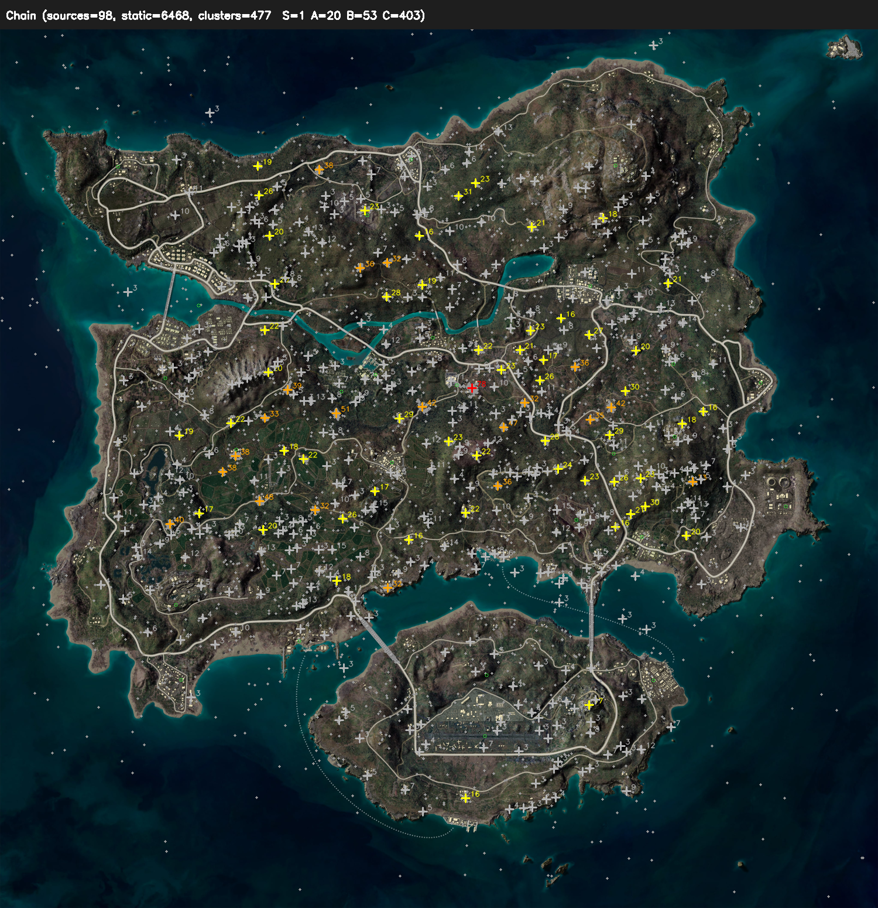

2026-05-25 · (MAP) chain 33/98편 진행 중 시점 · 검수자 확인용
results_chain_map/)는 깨끗하니, combiner만 MAP 정품으로 좁히면 명당 품질이 크게 좋아진다.
컴퓨터 재시작에도 chain이 살아남아 자동 재개됨. 내부 watchdog(30분 정체 시 정지)·GPU 과열 safety 작동 중. 나머지 65편은 약 6~8시간 뒤 완료 예정.
| airplane (비행 중) | 660 | 46.5% |
| player (착지/정지) | 451 | 31.8% |
| vehicle (차량) | 308 | 21.7% |
⚠️ airplane이 절반 — 비행 단계 프레임이 많거나 과검출. 단, 명당 계산에서는 airplane·vehicle 모두 제외되므로 명당 품질엔 영향 없음(아래 ③).
| 0.9+ | 87 | 6.1% |
| 0.7–0.9 | 388 | 27.3% |
| 0.5–0.7 | 343 | 24.2% |
| 0.3–0.5 | 453 | 31.9% |
| <0.3 | 148 | 10.4% |
추론 threshold가 conf=0.25로 낮아 저신뢰가 42% 포함. 명당은 위치 반복으로 거르므로 일부 노이즈는 클러스터에서 자연 소거됨.
| gray | 445 | |
| green | 316 | |
| yellow | 284 | |
| blue | 191 | |
| orange / purple / red / other | 183 |
⚠️ gray(채도 낮음)가 최다. 죽은 마커·관전 UI·흐린 마커가 player로 잡혔을 가능성. 색은 명당 위치 계산엔 안 쓰이지만, 클러스터 "주색"이 gray면 죽은 자리일 수 있어 ④ 시각 검수 대상.
✅ 클러스터링은 vehicle(893)·airplane(1338)을 제외하고 static 1,671만 사용 — 설계가 올바르다. DBSCAN eps=0.004(≈32m), min_samples=3.

에란겔 맵 위 클러스터 (S=빨강, A/B=노랑 계열, C=회색). 중앙(Pochinki/School/Rozhok)에 집중, 외곽까지 산재.
| 등급 | 도시 | count | 기여 영상수 | 분산(spread) | 주색 |
|---|---|---|---|---|---|
| S | Pochinki | 60 | 2 | 460 m | orange |
| S | Pochinki | 59 | 4 | 48 m | green |
| S | Pochinki | 58 | 3 | 233 m | red |
| S | Pochinki | 51 | 3 | 184 m | red |
| S | Pochinki | 46 | 3 | 80 m | yellow |
| S | Farm | 43 | 3 | 194 m | blue |
| A | Pochinki | 36 | 6 | 744 m | orange |
| A | Pochinki | 33 | 2 | 353 m | red |
| A | Pochinki | 27 | 2 | 228 m | red |
⚠️ S등급 6개 중 5개가 Pochinki 한 도시에 몰림 + spread 460m·744m는 명당 한 자리치곤 과도하게 넓음. 같은 자리가 여러 조각으로 쪼개진 과분할 신호다. 기여 영상수가 2~4로 낮은 것도 함께 본다.
| 소스 | static | 정체 | 판정 |
|---|---|---|---|
full_results_weekly_10s | 761 | weekly_test 단일 영상, 10초 샘플 | 중복 |
full_results_weekly_v8zone | 260 | 같은 weekly_test, 30초 샘플 | 중복 |
full_results_1080_v8zone | 33 | 1080p 단일 영상 | 단일 |
results_chain/ (1차) | ~ | 일반영상 109편 (영상당 0.4마커, "무의미") | 노이즈 |
results_chain_map/ (정품) | 617* | 진짜 (MAP) 33편 — 우리가 원하는 데이터 | 정품 |
* MAP+1차 디렉토리 합산 617. 즉 같은 weekly_test 영상 하나가 761+260=1,021 static(전체의 61%)으로 이중 카운트되어 클러스터를 지배하고 있다. cluster_chain_combined.py의 SRC_DIRS·EXTRA_SOURCES가 옛 테스트 결과와 중복본을 모두 합치는 게 원인.
→ Pochinki S 5개 과분할은 이 단일 영상 중복 편향의 결과일 가능성이 높다. 한 영상에서 한 자리가 시간축으로 수십 번 잡혀 한 도시에 뭉친 것.
| 옵션 | 내용 | 품질 | 비용 |
|---|---|---|---|
| A. combiner 정품화 추천 | cluster_chain_combined.py가 results_chain_map/만 쓰도록 수정. weekly 중복·1차·1080 제외 |
오염 제거, 명당 신뢰↑ | 코드 1곳 수정 + 재클러스터링 (수초) |
| B. eps만 키우기 | DBSCAN eps 상향으로 과분할 완화 | 증상만 완화, 오염 잔존 | 파라미터 튜닝 반복 |
| C. 그대로 두고 98편 완료 후 판단 | 지금은 손대지 않음 | 중간점검 의미 약함 | 0 |
생성 docs/resources/mockups/2026-05-25-decision-pub34-data-midcheck.html · 데이터 출처 results_chain_map/*.json, 2026-05-24-pub34-myungdang-chain.json